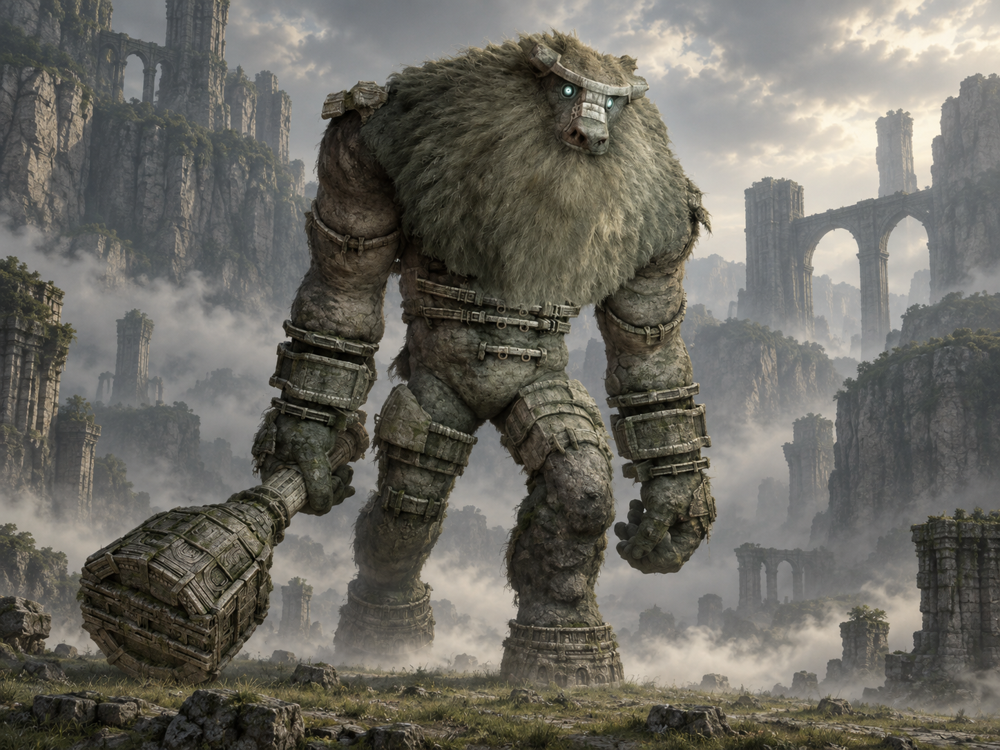

Dois nomes, duas origens
“Minotaur_A” identifica o colosso nos registros de desenvolvimento. “Valus” é o nome popularizado pelos fãs; não é apresentado como seu nome próprio durante o jogo.

Colosso 01 · Terras Proibidas
O primeiro encontro com o impossível.
Pedra, pelo e uma silhueta monumental. O primeiro gigante apresenta a Wander uma jornada em que observar é tão importante quanto empunhar a espada.
Conheça o gigante01 / O gigante
Valus tem o corpo de um enorme humanoide: ombros largos, braços pesados e uma cabeça pequena em relação ao tronco. A pelagem espessa se mistura a placas e anéis de pedra, enquanto uma grande clava reforça a impressão de força e peso.
Seu movimento lento contrasta com o alcance dos golpes. Mais do que medir forças, o encontro convida a reconhecer superfícies, observar o ritmo do gigante e encontrar uma maneira de escalá-lo.
*Os cerca de 16 m de altura são uma estimativa publicada em guias da comunidade, não uma medida oficial confirmada. Para este colosso bípede, a ficha usa altura como referência de tamanho.
02 / O caminho
Partindo do Santuário da Adoração, atravesse a planície em direção ao sul. A luz refletida pela espada ajuda a orientar o percurso até as escarpas.
Deixe Agro na base e continue a pé pelas saliências e superfícies cobertas de vegetação. No alto, o caminho leva ao vale cercado por paredões onde acontece o encontro.
Abrir mapa das Terras Proibidas03 / Um olhar mais atento
“Minotaur_A” identifica o colosso nos registros de desenvolvimento. “Valus” é o nome popularizado pelos fãs; não é apresentado como seu nome próprio durante o jogo.
A subida até a arena apresenta movimentos que serão úteis na luta: agarrar superfícies, saltar entre apoios e atravessar obstáculos.
Aves circulam ao redor do gigante. Esse pequeno movimento no alto é um detalhe para observar entre os passos de Valus.
04 / O encontro
Algumas pistas para começar, deixando a descoberta da luta com você.
Dicas gerais para o modo Normal. A ficha não detalha todos os pontos vitais nem o desfecho do confronto.
Ficha baseada em registros da comunidade e guias de jogo. A arte é uma interpretação visual, não uma captura do jogo.